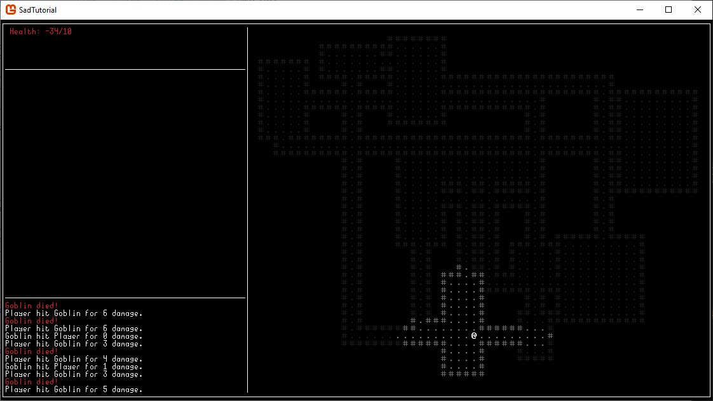

Before we can move on to more interesting mechanics, we need to make a better map to play with. The field of map generation could have an entire tutorial just dedicated to different ways to generate maps on our 60x48 area, but for now we'll start with something simple. We'll place a handful of rectangular rooms, then draw corridors between them.
1. New Functions
First thing we need to do to overhaul our map is remove the current "generation" code from the map constructor, replacing the way we initialized the room previously with a simple for-loop that sets all of the Tiles array to stone walls. If you're using a sparse map, set the default tile to stone wall and have no tiles placed for now. Create a function in Map called ApplyRoom that takes a Rectangle as input, and sets all the tiles in the positions indicated by the rectangle to floors. Then create a function that does the same thing but with a List<Point>. Finally, create a List<Rectangle> to store the rooms in the map, and a function to return the center tile of a random room from that list.
public void ApplyRoom(Rectangle rect) {
for (int x = rect.X; x < rect.X + rect.Width; x++) {
for (int y = rect.Y; y < rect.Y + rect.Height; y++) {
if (x >= 0 && x < Width && y >= 0 && y < Height) {
Tiles[x + y * Width] = new Tile("Stone Floor", '.', Color.Gray, false, false);
}
}
}
}
public void ApplyLine(List positions) {
for (int i = 0; i < positions.Count(); i++) {
Point pos = positions[i];
if (pos.X >= 0 && pos.X < Width && pos.Y >= 0 && pos.Y < Height) {
Tiles[pos.X + pos.Y * Width] = new Tile("Stone Floor", '.', Color.Gray, false, false);
}
}
}
public Point RandomRoomCenter() {
return Rooms[GameSettings.rand.Next(Rooms.Count)].Center;
}
2. Room Placements
Now in the Map constructor, create a for-loop that creates 10 rectangles and places them onto the map without intersecting other rectangles.
for (int i = 0; i < 10; i++) {
int roomWidth = GameSettings.rand.Next(10) + 3;
int roomHeight = GameSettings.rand.Next(10) + 3;
int roomX = GameSettings.rand.Next(Width - roomWidth - 2) + 1;
int roomY = GameSettings.rand.Next(Height - roomHeight - 2) + 1;
Rectangle newRoom = new Rectangle(roomX, roomY, roomWidth, roomHeight);
while (true) {
bool intersects = false;
foreach (Rectangle room in Rooms) {
if (room.Intersects(newRoom)) {
intersects = true;
}
}
if (!intersects)
break;
roomX = GameSettings.rand.Next(Width - roomWidth - 2) + 1;
roomY = GameSettings.rand.Next(Height - roomHeight - 2) + 1;
newRoom = new Rectangle(roomX, roomY, roomWidth, roomHeight);
}
Rooms.Add(newRoom);
ApplyRoom(newRoom);
}
3. Corridors
Finally, after creating all the rooms in our constructor, draw a line from the center of each room to the center of the next room in the list (stopping one before the end, so we don't try to access a nonexistant room). We can use some clever numbers to do this very easily with our new ApplyLine function:
for (int i = 0; i < Rooms.Count - 1; i++) {
ApplyLine(Lines.GetLine(Rooms[i].Center, new Point(Rooms[i].Center.X, Rooms[i+1].Center.Y)).ToList());
ApplyLine(Lines.GetLine(Rooms[i+1].Center, new Point(Rooms[i].Center.X, Rooms[i+1].Center.Y)).ToList());
}
This should result in a map that looks more or less like the following image, which is suitably interesting for us to work with for a while.

4. Conclusion
Now we've got a more interesting map to work with for our upcoming chapters! Right now we're still not placing monsters in the rooms themselves, but we'll get to that next chapter as we add items.
using GoRogue;
using GoRogue.MapViews;
namespace SadTutorial.Data {
public class World {
public Map CurrentMap;
public Player Player;
public FOV PlayerFOV;
public LambdaMapView MapView;
public List SeenTiles = new();
public World() {
CurrentMap = new(60, 48);
Point spawn = CurrentMap.RandomRoomCenter();
Player = new("Player", spawn.X, spawn.Y);
Player.SetStats(10, "1d6");
ResetFOV();
UpdateFOV();
}
public void ResetFOV() {
MapView = new(CurrentMap.Width, CurrentMap.Height, (pos) => {
Tile? tile = CurrentMap.TileAt(pos.X, pos.Y);
if (tile != null) {
return !tile.BlocksLOS;
}
return true;
});
PlayerFOV = new(MapView);
SeenTiles.Clear();
}
public void UpdateFOV() {
PlayerFOV.Calculate(Player.X, Player.Y, 10);
foreach (var point in PlayerFOV.NewlyUnseen) {
SeenTiles.Add(point);
}
}
}
}
namespace SadTutorial.Data {
public class Map {
public Tile[] Tiles;
public int Width;
public int Height;
public List Monsters = new();
public List Rooms = new();
public Map(int width, int height) {
Tiles = new Tile[width * height];
Width = width;
Height = height;
for (int i = 0; i < Tiles.Length; i++) {
Tiles[i] = new Tile("Stone Wall", '#', Color.DimGray, true, true);
}
for (int i = 0; i < 10; i++) {
int roomWidth = GameSettings.rand.Next(10) + 3;
int roomHeight = GameSettings.rand.Next(10) + 3;
int roomX = GameSettings.rand.Next(Width - roomWidth - 2) + 1;
int roomY = GameSettings.rand.Next(Height - roomHeight - 2) + 1;
Rectangle newRoom = new Rectangle(roomX, roomY, roomWidth, roomHeight);
while (true) {
bool intersects = false;
foreach (Rectangle room in Rooms) {
if (room.Intersects(newRoom)) {
intersects = true;
}
}
if (!intersects)
break;
roomX = GameSettings.rand.Next(Width - roomWidth - 2) + 1;
roomY = GameSettings.rand.Next(Height - roomHeight - 2) + 1;
newRoom = new Rectangle(roomX, roomY, roomWidth, roomHeight);
}
Rooms.Add(newRoom);
ApplyRoom(newRoom);
}
for (int i = 0; i < Rooms.Count - 1; i++) {
ApplyLine(Lines.GetLine(Rooms[i].Center, new Point(Rooms[i].Center.X, Rooms[i+1].Center.Y)).ToList());
ApplyLine(Lines.GetLine(Rooms[i+1].Center, new Point(Rooms[i].Center.X, Rooms[i+1].Center.Y)).ToList());
}
}
public void ApplyLine(List positions) {
for (int i = 0; i < positions.Count(); i++) {
Point pos = positions[i];
if (pos.X >= 0 && pos.X < Width && pos.Y >= 0 && pos.Y < Height) {
Tiles[pos.X + pos.Y * Width] = new Tile("Stone Floor", '.', Color.Gray, false, false);
}
}
}
public void ApplyRoom(Rectangle rect) {
for (int x = rect.X; x < rect.X + rect.Width; x++) {
for (int y = rect.Y; y < rect.Y + rect.Height; y++) {
if (x >= 0 && x < Width && y >= 0 && y < Height) {
Tiles[x + y * Width] = new Tile("Stone Floor", '.', Color.Gray, false, false);
}
}
}
}
public Point RandomRoomCenter() {
return Rooms[GameSettings.rand.Next(Rooms.Count)].Center;
}
public Tile? TileAt(int x, int y) {
if (x >= 0 && x < Width && y >= 0 && y < Height) {
return Tiles[x + y * Width];
}
return null;
}
public Actor? ActorAt(int x, int y) {
foreach (var mon in Monsters) {
if (mon.X == x && mon.Y == y) return mon;
}
if (GameSettings.World.Player.X == x && GameSettings.World.Player.Y == y) return GameSettings.World.Player;
return null;
}
public void PlaceMonsters() {
for (int i = 0; i < 30; i++) {
int x = GameSettings.rand.Next(Width);
int y = GameSettings.rand.Next(Height);
while (TileAt(x, y) == null || TileAt(x, y).BlocksMove || ActorAt(x, y) != null) {
x = GameSettings.rand.Next(Width);
y = GameSettings.rand.Next(Height);
}
Actor goblin = new("Goblin", 'g', Color.LimeGreen, x, y);
goblin.SetStats(5, "1d2-1");
Monsters.Add(goblin);
}
}
}
}